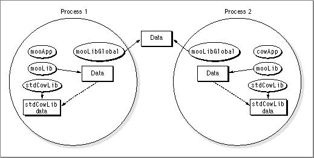

Legacy Document
Important: The information in this document is obsolete and should not be used for new development.
Important: The information in this document is obsolete and should not be used for new development.


Systemwide Sharing and Data-Only Fragments
As discussed in Chapter 1, a fragment can select either per-process or systemwide (global) sharing for its data sections. If you specify systemwide sharing, however, you should do so only with fragments that contain no code. The danger in having code in a fragment whose data is shared globally is that a globally shared routine may end up making a call into a process. Such a call goes through the fragment's direct data area, which holds a pointer to the called routine's transition vector. If two or more processes are sharing the fragment, the target of the pointer can be unclear (each process could contain an eligible called routine). Figure 3-7 illustrates the problem.Figure 3-7 Systemwide sharing in a fragment containing code and data
A solution is to isolate the data that must be globally shared in a data-only fragment. Function calls are stored in per-process data so there is no confusion as to which process the calls refer. Figure 3-8 shows the fragment
mooLibseparated intomooLibandmooLibGlobal.Figure 3-8 Systemwide sharing using a data-only fragment

© Apple Computer, Inc.
11 MARCH 1997